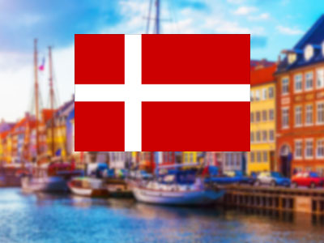
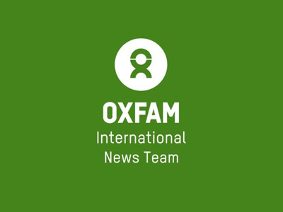
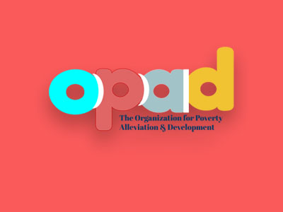
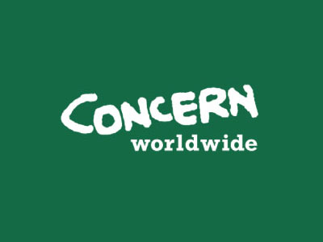
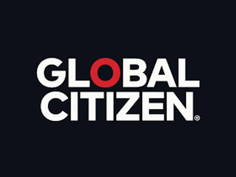
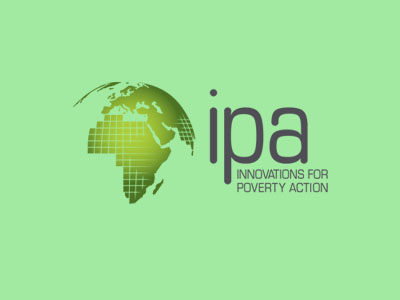

This is an important subject to consider, and one that is frequently overlooked.
Poverty, without a doubt, takes a severe toll on those who are caught up in it.
One of the most constant findings in epidemiology is that lower socioeconomic position,
particularly destitution, has a detrimental impact on an individual's health.
Poverty is linked to an increased risk of heart disease, diabetes, hypertension, cancer,
infant mortality, mental illness, undernutrition, lead poisoning, asthma, and dental issues, among other things.
So in this section we hope to give you an understanding of the measures taken for poverty reduction in three main sections.
Countries
South Sudan,Equatorial Guinea,
Madagascar,
Guinea-Bissau,
Eritrea,
Sao Tome and Principe,
Burundi,
Democratic Republic of the Congo,Central African Republic,
Guatemala, according to world bank these are the top most poverty rates countries.
But other side china, denmark, canada, u.s these 5 countries have the best poverty reduction programes.
And also it is important to note that none of these countries are fully free of poverty,
but they do present some excellent examples of how governments might address the problem.
With the support of organizations like USAID, it's evident that this is a problem that many people are concerned about.
China
China has aided in the reduction of world poverty by more than 70%.
Between 1981 and 2013, China raised a total of 850 million people out of poverty.
In China, the fraction of individuals living on less than $1.90 has decreased from 88 percent to less than 2% in 32 years.
Brazil
Brazil has made significant progress in eliminating poverty and income disparities.
According to researchers, the Family Grant Program has considerably reduced income gap and poverty by ensuring that more children attend school.
The Continuous Cash Benefit is a type of income transfer that is specifically designed for the elderly and disabled.
Canada
In 2017, Canada's poverty-reduction programs aided over 2 million people.
According to reports, Canada aims to eliminate poverty in half by 2030.
The National Housing Strategy is a housing investment strategy that aims to assist the elderly,
persons fleeing domestic abuse, and Indigenous people.
United States.
Social Security could help reduce poverty among the elderly by 75 percent.
The Earned Income Tax Credit is beneficial for families earning approximately 150 percent of the poverty line,
or approximately $25,100 for a four-person family. Food stamps and other programs have also helped to reduce deep poverty.

United States.
Unemployed people, disabled people, and the elderly are among those who benefit from Denmark's social welfare system.
Denmark's citizens are typically healthy, with low infant mortality rates.
Denmark likewise provides free public education, and the majority of its adult population is literate.
BUSINESS
We call these companies "BUSINESS FOR 2030" why because these companies are targeted at 2030.
They hpoe to help as many people as possible affected.
Not only these businesses but many more businesses have been started based on 2030 to cover all Sustainability goals.
Organizations
These 5 Organizations have been providing assistance through various projects to countries facing poverty in the world for many years.
It also works to improve the health of those countries.It also provides them with the educational knowledge they need for their development.
They support many sustainability development goals,not just poverty.

Oxfam International.
They raced against the clock in India to protect the most vulnerable from COVID-19.
They worked tirelessly in Yemen to help those who were most affected.
They assisted Palestinians in Gaza in rebuilding and recovering from the bloodshed.
They assisted Palestinians in Gaza in rebuilding and recovering from the bloodshed.
In Ethiopia, They collaborated with local organizations to provide critical assistance.
They worked in Bangladesh to promote health and safety in refugee camps.
They preserved females' schooling in South Sudan from the pandemic's effects.
They provided cash help and subsidies to start companies to families in Iraq.
In Vanuatu, blockchain technology was used to transform humanitarian relief.
They planted the seeds of climate resistance in the Philippines.
They assisted farmers in Burkina Faso in growing food in a hot and dry area.
They discovered labor exploitation in coffee farms in Brazil.
They marched for climate justice in Glasgow and other cities around the world.

The Organization for Poverty Alleviation and Development.
Kenya is a country where improve the communal campaign against violence against women by providing a comprehensive response and innovative techniques.
Uganda is a country where Children and Displaced People's Welfare Program
Climate Change Interventions in Kenya
Drought-related poverty in Zambia need food assistance.
Response to catastrophes and food and shelter mitigation in Zambia
To reduce poverty in Zambia, provide agricultural input and encourage food production.
Support and empowerment for refugees' entrepreneurial skills in Zambia

Concern WorldWide.
Concern Worldwide is a non-profit humanitarian organization based in the United Kingdom.
It supports the world's poorest people and intervenes in the world's poorest countries.
Its staff consists of 3,000 specialists from 50 countries who work with 25 million poor people each year.
Concern Worldwide reaches out to and assists the most vulnerable communities in the world,
including those affected by conflict, natural disasters, climate change, flooding, and extreme hunger.
In 25 countries, the organization executes a variety of projects aimed at addressing specific causes of severe poverty.
It is divided into six sections: livelihoods, health and nutrition, education, emergencies, gender equality, and innovation.

Global Citizen.
Global Citizen is a non-profit organization that works to alleviate severe poverty around the world. New York is the organization's headquarters,
with offices in Canada, Australia, South Africa, Germany, and the United Kingdom.
It is a grassroots movement with the goal of eradicating extreme poverty by 2030.
The Global Citizen platform gives people the skills and knowledge they need to understand the root causes of severe poverty and take action to address them.
Millions of people all across the world have already taken over 24 million actions to pressure world leaders to end severe poverty by 2030.
As a result, leaders have made promises and policy initiatives worth more than 48 billion dollars.
They almost taken 505,382 total action.

Innovations for Poverty Action.
Innovations for Poverty Action (IPA) is a non-profit organization that conducts research and advocates for effective solutions to global poverty issues.
It brings together scholars and decision-makers to assess and implement these solutions in order to better the lives of the underprivileged.
Since its founding in 2002, IPA has produced and tested over 550 solutions to poverty-related concerns.
IPA has collaborated with over 600 researchers to undertake over 830 evaluations in 51 countries since its inception.
It has resulted in the creation of successful programs that have a global impact on millions of people.
p>